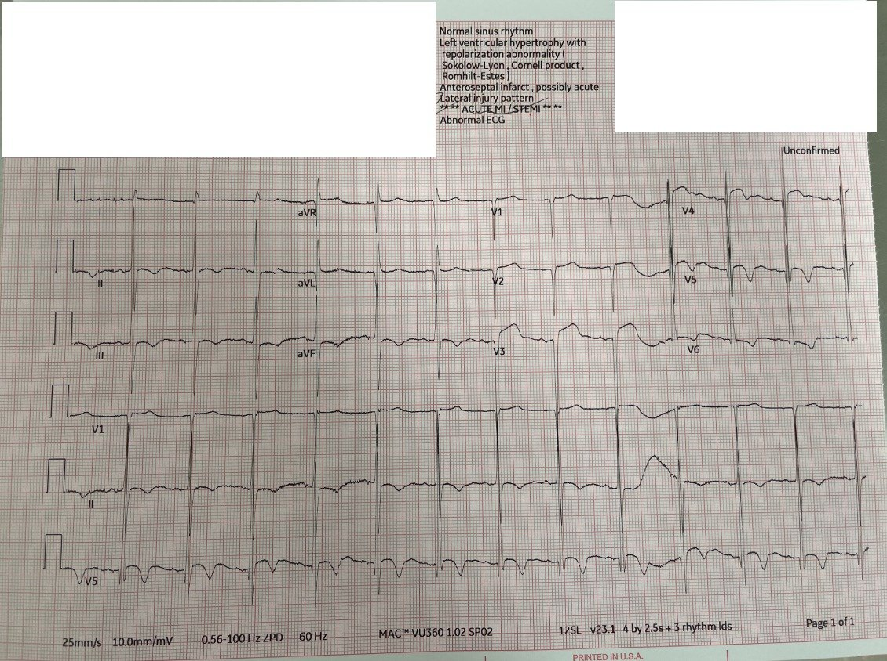
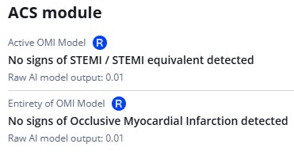
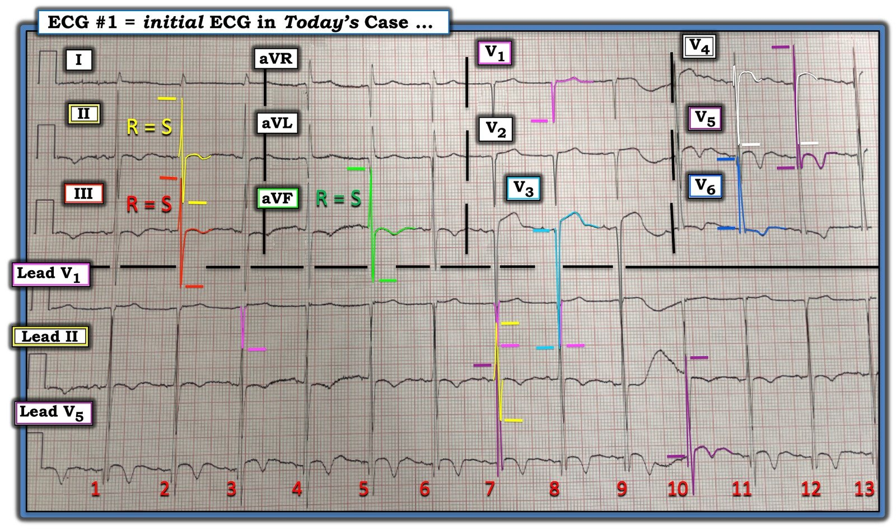

12/02/2025 — ** **ACUTE MI/STEMI** **: Kích hoạt phòng thông tim nếu bệnh nhân đau ngực?
Bản dịch tiếng Việt của bài "** **ACUTE MI/STEMI** **: Activate the cath lab if the patient has chest pain?" – Dr. Smith’s ECG Blog. Giữ nguyên toàn bộ 4 hình ảnh của bản gốc.
Tác giả: Willy Frick
Tôi đang rà soát tài khoản PMcardio của cơ sở chúng tôi, công cụ chúng tôi đang dùng để cải thiện việc nhận diện sớm những bệnh nhân có OMI kín đáo trên điện tâm đồ.
Tôi bắt gặp điện tâm đồ này:


Bạn nghĩ gì?
Ngay cả trước khi có bối cảnh lâm sàng, điện tâm đồ này đơn giản là không có vẻ gì đáng lo về OMI, bất chấp kết quả đọc của máy là ** ** ACUTE MI / STEMI ** **.
Tôi gửi điện tâm đồ này cho Dr. Smith mà không kèm bối cảnh lâm sàng nào, và ông trả lời ngay lập tức: “Giả.”
Tôi đoán phần lớn độc giả của blog không gặp khó khăn với ca này. Nhưng trong thế giới STEMI, đây là một điện tâm đồ khó đối với hầu hết mọi người.
Hơn nữa, có bao nhiêu bác sĩ lâm sàng thực sự thoải mái gạt kết quả đọc của máy sang một bên và tin vào trực giác rằng điện tâm đồ này trông không giống thiếu máu cục bộ? May mắn là các bác sĩ khám bệnh nhân đang sử dụng mô hình AI điện tâm đồ OMI Queen of Hearts của PM Cardio, và “Nữ hoàng” hoàn toàn không có chút lo ngại nào.


Khi Nữ hoàng có phần nghi ngờ OMI, bà sẽ hỏi bệnh nhân có triệu chứng hội chứng vành cấp (ACS) hay không. Trong ca này bà thậm chí không cần hỏi, vì ngay cả khi bệnh nhân đến viện với đau ngực, bà vẫn kết luận là ÂM TÍNH.
Khi xem lại hồ sơ bệnh án, tôi được biết bệnh nhân đến viện vì ngất. Bác sĩ cấp cứu đã thận trọng (và đúng) ghi nhận rằng điện tâm đồ đạt tiêu chuẩn STEMI ở V3 và V4, nhưng sau đó ghi chép rằng không có triệu chứng ACS. Bệnh nhân được loại trừ nhồi máu cơ tim bằng xét nghiệm troponin liên tiếp.
Ấn tượng nhất là khoa tim mạch chưa bao giờ được mời hội chẩn! Sự hỗ trợ trấn an này từ AI đã cải thiện việc chăm sóc bệnh nhân nhờ tránh được các xét nghiệm bổ sung không cần thiết và sự tham gia của bác sĩ chuyên khoa.
Queen of Hearts không chỉ cực kỳ nhạy với OMI kín đáo mà còn rất giỏi nhận ra các điện tâm đồ dương tính giả.
Nữ hoàng làm giảm các ca kích hoạt phòng thông tim dương tính giả.
Chúng tôi đã công bố nghiên cứu này, cho thấy các ca kích hoạt phòng thông tim trước viện dương tính giả sẽ giảm 58% nếu sử dụng Nữ hoàng:
https://www.tandfonline.com/doi/abs/10.1080/10903127.2024.2399218 (bài báo công bố nghiên cứu nói trên)
Diễn giải điện tâm đồ trước viện dựa trên trí tuệ nhân tạo nhằm giảm các ca kích hoạt khẩn cấp phòng thông tim dương tính giả: một nghiên cứu đoàn hệ hồi cứu (Artificial Intelligence Driven Prehospital ECG Interpretation for the Reduction of False Positive Emergent Cardiac Catheterization Lab Activations: A Retrospective Cohort Study)
,
,
,
,
,
,
,
,
&
Tóm tắt
Mục tiêu
Dữ liệu cho thấy bệnh nhân bị nhồi máu cơ tim do tắc cấp tính động mạch vành (OMI) được hưởng lợi từ can thiệp qua da tiên phát kịp thời (PPCI). Nhiều đội cấp cứu ngoài viện (EMS) kích hoạt phòng thông tim để rút ngắn thời gian đến PPCI, nhưng phải chịu gánh nặng lớn từ các ca kích hoạt không phù hợp. Các thuật toán trí tuệ nhân tạo (AI) cho thấy triển vọng cải thiện việc diễn giải điện tâm đồ (ECG). Mục tiêu chính là đánh giá tiềm năng của AI trong việc giảm các ca kích hoạt dương tính giả mà không bỏ sót OMI.
Phương pháp
Các điện tâm đồ được phân loại theo (1) tiêu chuẩn STEMI, (2) phần mềm tích hợp trong máy ghi điện tâm đồ và (3) một thuật toán AI độc quyền (Queen of Hearts (QOH), Powerful Medical). Nếu ghi nhiều điện tâm đồ và bất kỳ bản ghi nào dương tính theo một phương pháp, thì phương pháp chẩn đoán đó được coi là dương tính. Kết cục chính là OMI, định nghĩa là có tổn thương thủ phạm trên chụp mạch kèm dòng chảy TIMI 0–2; hoặc dòng chảy TIMI 3 kèm troponin-I độ nhạy cao đỉnh > 5000 ng/L hoặc rối loạn vận động thành mới xuất hiện. Phân tích chính là tỷ lệ dương tính giả tính theo từng bệnh nhân.
Kết quả
Tổng cộng 140 bệnh nhân được sàng lọc và 117 bệnh nhân đạt tiêu chuẩn. Trong số này, 48 bệnh nhân đạt tiêu chuẩn kết cục chính là OMI. Có 80 ca dương tính theo tiêu chuẩn STEMI, 88 ca theo thuật toán của máy và 77 ca theo phần mềm AI. Mọi cách tiếp cận đều làm giảm dương tính giả: 27% với STEMI, 22% với phần mềm của máy và 34% với AI (p < 0.01 cho tất cả). Mức giảm dương tính giả không khác biệt có ý nghĩa giữa tiêu chuẩn STEMI và phần mềm AI (p = 0.19), nhưng tiêu chuẩn STEMI bỏ sót 6 (5%) ca OMI, trong khi AI không bỏ sót ca nào (p = 0.01).
Kết luận
Trong nghiên cứu hồi cứu đơn trung tâm này, một thuật toán dựa trên AI đã làm giảm các chẩn đoán OMI dương tính giả so với nhận định tổng thể (gestalt) của nhân viên y tế EMS. So với AI (không bỏ sót ca OMI nào), tiêu chuẩn STEMI cũng làm giảm dương tính giả nhưng bỏ sót 6 ca OMI thực sự. Cần thẩm định ngoài các kết quả này trên các đoàn hệ tiến cứu.

===================================
BÌNH LUẬN CỦA TÔI, bởi KEN GRAUER, MD (12/2/2025):
===================================
Như Dr. Frick đã nêu — ST chênh lên và sóng T đảo ngược trên điện tâm đồ hôm nay không phải là hậu quả của OMI cấp. Thay vào đó — gần như chắc chắn đây là một dấu hiệu đã có từ lâu ở bệnh nhân bị LVH rõ rệt này.
- Như tôi đã nhấn mạnh trong Bình luận của tôi ở cuối trang của bài ngày 14 tháng Mười Hai năm 2022 — Chúng tôi đã xem lại rất nhiều ca minh họa cho thách thức trong việc phân biệt giữa LVH rõ rệt — với LVH + OMI cấp chồng lên .
- ĐIỂM THEN CHỐT (PEARL) #1: Nói chung, hiếm khi thấy cả LVH rõ rệt lẫn OMI cấp trên cùng một bản ghi. Chính vì lý do này — chúng ta có thể “đi trước một bước” khi diễn giải điện tâm đồ của một bệnh nhân có triệu chứng mà có LVH rõ ràng. Lý do là về mặt thống kê (được kinh nghiệm của chúng tôi ủng hộ) — trong đại đa số trường hợp, những bản ghi như vậy có thể giống OMI cấp, nhưng hiếm khi gặp tắc cấp động mạch vành thực sự.
- ĐIỂM THEN CHỐT (PEARL) #2: Dù đã nói như trên — Hãy nhớ quy tắc “N = 1”. Ý tôi là dù hiếm khi thấy OMI thành trước cấp ở bệnh nhân có LVH rõ rệt — điều này vẫn có thể xảy ra — vì vậy chúng ta cần thận trọng và tránh bỏ sót ca OMI hiếm gặp ở bệnh nhân có LVH rõ rệt (Xem bài ngày 14 tháng Mười Hai năm 2022 đã nhắc ở trên về một ca có cả LVH rõ rệt và OMI cấp cùng tồn tại).
- ĐIỀU CỐT LÕI: Nắm vững các tiêu chuẩn chẩn đoán LVH trên điện tâm đồ giúp ích rất nhiều cho việc diễn giải. Vì mục đích này — chúng tôi đã tiện thêm một ĐƯỜNG LINK “LVH Criteria” (Tiêu chuẩn LVH) vào Menu ở đầu mọi trang của Dr. Smith’s ECG Blog. Link này dẫn bạn tới Bình luận của tôi trong bài ngày 20 tháng Sáu năm 2020 — trong đó tôi trình bày một cách tiếp cận dễ áp dụng để nhận diện LVH và “tăng gánh” (strain) trên điện tâm đồ.


Về CA BỆNH Hôm nay:
Để rõ ràng, trong Hình 1 — tôi đã đánh dấu bản ghi hôm nay.
- Chẩn đoán LVH rõ rệt lẽ ra phải hiển nhiên trên Hình 1. Dù vậy — sự chồng lấn giữa sóng R và sóng S ở nhiều chuyển đạo (nhất là với các dải nhịp chuyển đạo dài ở cuối bản ghi) — gây khó khăn cho việc xác định chính xác biên độ QRS (Xem cách tôi tô màu trên Hình 1 — nỗ lực tốt nhất của tôi để tính biên độ sóng R và sóng S ở các chuyển đạo).
- ĐIỂM THEN CHỐT (PEARL) #3: Cách dễ nhất để tránh nhầm lẫn do chồng lấn chuyển đạo — đơn giản là ghi lại điện tâm đồ ở nửa chuẩn (half standardization). Điều này đã không được thực hiện ở bản ghi hôm nay.
- Những nhát khó đánh giá biên độ QRS nhất là các nhát #7,8,9 — vì có chồng lấn với mỗi dải trong 3 dải nhịp chuyển đạo dài được ghi đồng thời (của các chuyển đạo V1,II,V5). Ví dụ — biên độ thật của sóng S ở chuyển đạo V3 gần như bị che khuất hoàn toàn do chồng lấn với cả dải nhịp chuyển đạo V1 và chuyển đạo II bên dưới. Trong những trường hợp chồng lấn nhiều chuyển đạo như vậy — tôi tìm ở nơi khác những chuyển đạo ít chồng lấn hơn (tức là ở chuyển đạo II và V1, được viền màu VÀNG và HỒNG) để xác định biên độ thật của sóng S và sóng R ở các chuyển đạo này. Nhờ vậy tôi xác định được sóng S ở chuyển đạo V3 (màu XANH DƯƠNG nhạt) sâu tới 36 mm!
- ĐIỂM THEN CHỐT (PEARL) #4: MẤU CHỐT để xác định rằng thay vì “đạt tiêu chuẩn STEMI dựa trên milimét” về mức ST chênh lên ở chuyển đạo V3 — với sóng S sâu 36 mm ở chuyển đạo này — thì mức ST chênh lên này hoàn toàn không “bất thường” (tức là nguyên tắc “tính tương xứng” (proportionality) giữ vai trò tối thượng trong đánh giá định tính các thay đổi ST-T ở bệnh nhân có LVH rõ rệt).
- Còn về hình dạng thẳng đuỗn của đoạn khởi đầu ST ở chuyển đạo V3 — hình dạng này hoàn toàn phù hợp với hình ảnh “tăng gánh” thất trái (LV “strain”) ở một chuyển đạo phía trước của bệnh nhân có sóng S ở các chuyển đạo trước cực kỳ sâu (Xem Bình luận của tôi trong bài ngày 6 tháng Hai năm 2020).
Còn các thay đổi ST-T ở các chuyển đạo khác trên Hình 1 thì sao?
Ở lần nhìn thứ 1 — ST dạng vòm (coving) kèm sóng T đảo ngược đối xứng có vẻ “sâu” ở chuyển đạo V5 có thể đáng lo ngại. Dù vậy — có một số lý do khiến tôi cho rằng hình ảnh ST-T này ở chuyển đạo V5 không đáng lo ngại:
- Một lần nữa, theo nguyên tắc “tính tương xứng” — sóng R cao 38mm ở chuyển đạo V5 cho thấy kích thước tương đối của sóng T đảo ngược ở chuyển đạo này không sâu như người ta có thể nghĩ lúc đầu.
- ST chênh xuống dốc xuống chậm rồi dốc lên nhanh hơn ở chuyển đạo V6 là hoàn toàn điển hình cho “tăng gánh” thất trái ở chuyển đạo bên trái này, nơi biên độ sóng R tăng đáng kể (đo được 22 mm).
- Bệnh nhân có LVH rõ rệt (nhất là những người tăng huyết áp lâu năm) thường biểu hiện không chỉ các thay đổi ST-T điển hình của “tăng gánh” thất trái — mà còn sóng T đảo ngược đối xứng như thấy ở chuyển đạo V5 ở đây.
- Cuối cùng — tôi diễn giải hình ảnh ST-T ở chuyển đạo V5 như một chuyển đạo “chuyển tiếp” nằm giữa ST dạng vòm và chênh lên thấy ở chuyển đạo V4 — và ST chênh xuống kiểu “tăng gánh” thấy ở chuyển đạo V6. Kiểu ST-T này ở chuyển đạo V5 không thấy ở các chuyển đạo khác, như lẽ ra phải thấy nếu đây thực sự là một thay đổi do thiếu máu cục bộ cấp.
Còn hiện tượng R = S ở các chuyển đạo dưới thì sao?
Tôi thấy các sóng R = S cao đáng ngạc nhiên ở mỗi chuyển đạo dưới là một đặc điểm thú vị và bất thường (sóng R và sóng S mỗi sóng ≥15 mm ở các chuyển đạo II,III và aVF). Tôi không nhớ nổi lần cuối mình thấy kiểu hình này ở cả 3 chuyển đạo dưới là khi nào.
- Kiểu hình R=S với các phức bộ RS cao này gợi nhớ đến hiện tượng Katz-Wachtel được mô tả ở bệnh nhi — trong đó dấu hiệu phức bộ RS hai pha ≥50 mm ở các chuyển đạo giữa ngực V2, V3 hoặc V4 gợi ý phì đại hai thất, nhất là ở trẻ có thông liên thất (VSD — Ventricular Septal Defect).
- Rõ ràng, các sóng R=S trên bản ghi hôm nay không sâu như trong hiện tượng Katz-Wachtel. Dù vậy, xét mối liên quan giữa các sóng R=S ở chuyển đạo dưới này với biên độ tăng rõ rệt ở các chuyển đạo trước ngực — tôi rất muốn xem siêu âm tim của bệnh nhân này, để đối chiếu kết quả siêu âm tim với điện tâm đồ thú vị hôm nay.
Kết luận:
Điện tâm đồ trong ca hôm nay nổi bật với LVH rõ rệt. Như Dr. Frick đã nêu — điện tâm đồ này không gợi ý OMI cấp. Tôi quy các thay đổi ST-T lan tỏa cho “tăng gánh” thất trái chứ không phải thiếu máu cục bộ.